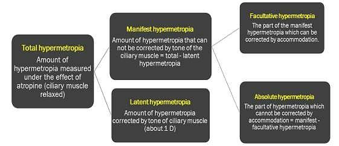

Refraction · Hypermetropia
Components of hypermetropia
Components
- Total hypermetropia: The amount of hypermetropia measured under the effect of atropine i.e. with the ciliary muscle completely paralyzed.
- Latent hypermetropia: The amount of hypermetropia which is corrected by the ciliary muscle tone. It is about 1 D.
- Manifest hypermetropia: The amount of hypermetropia that can’t be corrected by the ciliary muscle tone.
- It can be measured under the effect of cycloplegics other than atropine.
- It = total - latent hypermetropia.
- Facultative hypermetropia: The part of the manifest hypermetropia which can be corrected by accommodation.
- Absolute hypermetropia: The part of hypermetropia which cannot be corrected by accommodation.
- It = manifest - facultative hypermetropia.

In young age, there is high amplitude of accommodation. So, all the manifest hypermetropia may be facultative and the patient may see 6/6 without glasses.
As age advances accommodation becomes weaker and not all the manifest hypermetropia can be corrected, i.e. the absolute hypermetropia increases with age.